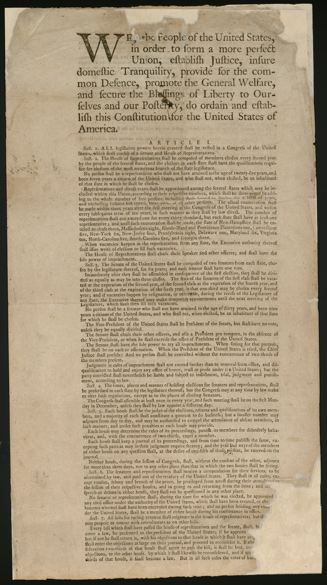

Directions: Work through the five stations in order. Each station holds one record from the Convention's summer. For each record, state the problem it was solving and the price it paid. At the end, judge which compromise in the document was most necessary to the union and which cost the republic most, and defend both halves of the judgment from the records.
Source: Framers of the Constitution, "Constitution, Preamble," 1787 (National Archives), as carried in the audited Primary Source Project bank record. The Preamble is quoted entire. It was written last, by the Committee of Style, to stand at the head of the finished document. Illustration: the first printed edition of the Constitution, printed by Dunlap and Claypoole at Philadelphia in September 1787; Library of Congress, public domain.

"We the People of the United States, in Order to form a more perfect Union, establish Justice, insure domestic Tranquility, provide for the common defence, promote the general Welfare, and secure the Blessings of Liberty to ourselves and our Posterity, do ordain and establish this Constitution for the United States of America."
The Articles of Confederation had opened with a list of the thirteen states by name. The Preamble names no state at all.
State the problem this record was solving. A new government needs a source of authority its readers will accept: what claim do the opening six words make about where this government's authority comes from, and how does the claim differ from the Articles' opening?
State the price this record paid. The Preamble promises to secure the Blessings of Liberty to ourselves and our Posterity. Using what you know from the reading about who could vote, sign, or be counted in 1787, state who stood inside the word ourselves as the Convention used it, and who stood outside it.
Source: James Madison, "Madison's Notes of the Debates," September 17, 1787 (Yale Avalon Project), as carried in the audited Primary Source Project bank record. The Convention kept no official record, and Madison's nightly notes are its fullest account. Quoted with cuts, marked by ellipses.
"Thus I consent, Sir, to this Constitution because I expect no better, and because I am not sure, that it is not the best. The opinions I have had of its errors, I sacrifice to the public good. I have never whispered a syllable of them abroad. Within these walls they were born, and here they shall die. ... Much of the strength & efficiency of any Government in procuring and securing happiness to the people, depends, on opinion, on the general opinion of the goodness of the Government, as well as well as of the wisdom and integrity of its Governors."
"Whilst the last members were signing it Doctr. FRANKLIN looking towards the Presidents Chair, at the back of which a rising sun happened to be painted, observed to a few members near him, that Painters had found it difficult to distinguish in their art a rising from a setting sun. ... But now at length I have the happiness to know that it is a rising and not a setting Sun."
Madison is recording Benjamin Franklin's closing speech, read aloud that day by James Wilson. The words are Franklin's. The only reason they survive is that Madison wrote them down.
State the problem this record was solving. Franklin expects no better document and is not sure this one is not the best, yet he consents and asks the others to bury their objections inside the room. What did public unanimity buy the new government, in his own argument about opinion?
State the price this record paid. The fullest record of the founding was one man's private notes on meetings held in secret, published after his death. What can a record like this one prove, and what can it never prove, about what fifty five men actually said and intended?
Source: George Washington, "Washington's Annotated Draft of the Constitution," 1787 (Library of Congress; exhibition description), as carried in the audited Primary Source Project bank record. This station describes an artifact rather than quoting a speech. The description below is the bank record's text. One correction stands on the record itself: the exhibition label quoted in the bank text names Carpenters' Hall, but the Convention met in the Pennsylvania State House, as the bank record's headnote states.
"[...] Near the end of the convention, a committee of delegates had a draft of the Constitution printed, and each delegate received a copy. Washington’s copy, displayed here, includes the notes he made, probably as he was sitting in Carpenters’ Hall discussing the text with his fellow delegates."
The artifact is a printed working draft covered in handwriting, Washington's own notes and those of the Convention's secretary, William Jackson, made while the debates ran. Washington presided over the Convention in near silence. His copy shows the presiding officer studying the text line by line, like any reader working through a draft.
State the problem this record was solving. Why did a convention of fifty five men, near the end of a summer of argument, need the draft printed and placed in every delegate's hands, the president's included?
State the price this record paid. A working draft shows a document still being argued over, line by line, by the man who would first hold office under it. What does this artifact do to the claim that the Constitution came out of the Convention finished and beyond argument, and what does the label's wrong hall teach about checking even a museum's description?
Source: Constitution of the United States, Article I, Section 2 (National Archives, Charters of Freedom transcription). Quoted with cuts, marked by ellipses. Illustration: the first page of the engrossed Constitution signed on September 17, 1787, which carries Article I; National Archives, public domain.

"The House of Representatives shall be composed of Members chosen every second Year by the People of the several States ..."
"Representatives and direct Taxes shall be apportioned among the several States which may be included within this Union, according to their respective Numbers, which shall be determined by adding to the whole Number of free Persons, including those bound to Service for a Term of Years, and excluding Indians not taxed, three fifths of all other Persons."
The clause names no one. Free Persons are counted whole. Indians not taxed are excluded. All other Persons, the enslaved, are counted at three fifths, toward seats in the House and toward direct taxes alike.
State the problem this record was solving. Apportionment needed one number every state would accept: work the clause's arithmetic for a state with 200,000 free persons and 100,000 enslaved people, and state what the southern and northern delegations each got out of tying representation and direct taxes to the same fraction.
State the price this record paid, in the document's own arithmetic. The people counted at three fifths could not vote, hold office, or leave. State what their count bought the states that held them, in the House and, through the House count, in the choice of a president, and state what the clause's silence about the word slavery made easier for the men who wrote it.
Source: Benjamin Franklin, closing speech to the Convention, September 17, 1787, in James Madison's Notes of the Debates (Avalon Project, Yale Law School). Franklin, aged eighty one and in pain, wrote the speech out and had James Wilson read it aloud. Quoted with cuts, marked by ellipses.
"Mr. President, I confess that there are several parts of this constitution which I do not at present approve, but I am not sure I shall never approve them: For having lived long, I have experienced many instances of being obliged by better information, or fuller consideration, to change opinions even on important subjects, which I once thought right, but found to be otherwise. It is therefore that the older I grow, the more apt I am to doubt my own judgment, and to pay more respect to the judgment of others. ..."
"In these sentiments, Sir, I agree to this Constitution with all its faults, if they are such; because I think a general Government necessary for us, and there is no form of Government but what may be a blessing to the people if well administered ... I doubt too whether any other Convention we can obtain, may be able to make a better Constitution. ... Thus I consent, Sir, to this Constitution because I expect no better, and because I am not sure, that it is not the best."
"On the whole, Sir, I can not help expressing a wish that every member of the Convention who may still have objections to it, would with me, on this occasion doubt a little of his own infallibility, and to make manifest our unanimity, put his name to this instrument."
State the problem this record was solving. Three delegates would refuse to sign, and every objection repeated at home could sink ratification in the states. What exactly does Franklin ask the doubters to do with their doubts, and what reason does he give from his own long life?
State the price this record paid. Franklin agrees to a document with faults he can name, on the ground that no better convention could be had. State what his argument concedes about the document itself, and what it asks the country to trade away in exchange for a government at all.
Fill in the table from the five stations. Keep each entry to the record itself: the problem in the delegates' own situation, the price in the document's own terms.
| Record | The problem it was solving | The price it paid |
|---|---|---|
| 1. The Preamble | ||
| 2. Madison's Notes | ||
| 3. Washington's draft | ||
| 4. Article I, Section 2 | ||
| 5. Franklin's speech |
Now judge the compromises whole. A strong verdict names one compromise as most necessary and defends the choice against the strongest rival candidate, and names one compromise as costing the republic most and says what the cost was, in people and in years, not in general words. The Great Compromise, the three fifths count, the protection of the slave trade to 1808, the electoral college, and the refused bill of rights are all in the field. A verdict that calls every compromise wise, or every compromise corrupt, has not worked the records.
Write your verdict in a paragraph. State which compromise was most necessary to the union and defend it against its strongest rival. Then state which compromise cost the republic most, and name the cost from the documents.
Problem solved. The opening claims that the government's authority comes from the people themselves, We the People of the United States, acting as one body to ordain and establish the Constitution. The Articles had rested the union on the states as parties, opening with their names. The Preamble's claim is broader and riskier at once: a national government resting on a national people, which is the authority the Virginia Plan's design required and the ratification by conventions of the people was meant to supply.
Price paid. The promise runs to ourselves and our Posterity, and in 1787 the people who could act on that promise were a fraction of the people living under it. Women could not vote. Enslaved people were counted at three fifths toward other men's seats and could not vote at all. Native peoples stood outside the count except as a category excluded from it. The Preamble's language was wide enough that the excluded could later quote it back, as the lesson's final document in the next lesson shows, but the Convention itself did not open the door it described.
Problem solved. Franklin argues that a government's strength and efficiency depend on opinion, on the general opinion of its goodness and of its governors' wisdom and integrity. A Convention that went home quarreling in public would hand the Constitution's enemies their argument and frighten foreign nations and the states alike. Unanimity, real or apparent, was a working asset of the new government, and Franklin spent his standing to buy it, sacrificing his own objections inside the room where they were born.
Price paid. The record itself is the price's other half. Everything students can know about the debates rests chiefly on one participant's private notes, taken for himself and for history, revised by him, and published after every delegate was dead. The Notes can prove what Madison heard, chose to record, and chose to keep. They cannot prove what was said in the corridors, what he missed or softened, or what the other fifty four men intended by the words he assigned them. Corroboration against the other delegates' scattered notes and against the finished text is the discipline this station teaches.
Problem solved. By September the Convention was voting on a text assembled from four months of amendments, committee reports, and compromises carried in men's heads and in loose papers. A printed draft put one identical text in every hand, the president's included, so the final votes and the engrossing could proceed from the same words. Washington's margin notes show the presiding officer doing what the print made possible, studying the draft line by line as the debates ran.
Price paid. The artifact refuses the marble version of the founding. The Constitution in September 1787 was a draft under revision, annotated by its own presiding officer, and its final form was contingent on votes that could have gone otherwise, as the July 2 tie proves. The label's error carries the second lesson. The bank record's quoted exhibition text places Washington in Carpenters' Hall, where the First Continental Congress had met in 1774. The Convention met in the Pennsylvania State House. A museum label is a source like any other, and this one is wrong on its face about the room, which the bank record's headnote corrects.
Problem solved, with the arithmetic. A state with 200,000 free persons and 100,000 enslaved people counts 200,000 + (100,000 x 3/5) = 260,000. One fraction, applied to seats and to direct taxes in the same breath, gave each side something it could defend at home. The southern states gained House seats far beyond their voting population. The northern states gained the principle that the same count that raised a state's seats also raised its share of direct taxes, and kept the fraction below the full count the South had wanted for representation.
Price paid. The count converted enslaved people, who could not vote, hold office, or leave, into political weight for the states that held them: more House seats, and, because a state's presidential electors equal its members of Congress, more weight in choosing presidents, an advantage that ran through the republic's first seven decades. The clause's language did quieter work. By counting all other Persons and barring a trade by date rather than naming slavery or the slave trade, the document protected the institution without naming it, which let delegates defend the text at home as a document about representation and taxes. Madison's later judgment stands in the reading: the Convention had not confronted the thing by its right name.
Problem solved. Franklin asks each member who still holds objections to doubt a little of his own infallibility and sign, making the Convention's unanimity visible to the country. His reason is autobiographical and stated in full: a long life has obliged him, again and again, to change opinions he once held with confidence, so age has taught him to distrust his own judgment and respect the judgment of others. He adds the practical ground: no other convention could be expected to make a better constitution, because any assembly brings its members' prejudices, passions, and local interests with it.
Price paid. The argument concedes the document's imperfection as its premise. Franklin approves parts of the Constitution not at all, expects no better, and is not sure it is not the best, which is the weakest endorsement a great name could give, and deliberately so. What the country is asked to trade is the pursuit of a better instrument: objections are to die inside the room, dissenters are to recommend what they cannot approve, and the people's conventions are to judge a text presented with a united front its makers did not feel. Thirty nine signed. Randolph, Mason, and Gerry refused, and Franklin's speech exists in the record because Madison judged it worth his ink.
Full credit verdicts name one compromise as most necessary, defend it against its strongest rival, name one as costliest, and price the cost from the documents. The strongest necessity case is usually the Great Compromise: without the July 16 settlement the Convention dissolves on the July 2 tie, and neither the Virginia Plan's strength nor any constitution follows; its rival is the three fifths count, without which the lower South might have walked, and a strong verdict answers that the representation settlement came first in time and made the room in which the count could be bargained at all. The strongest cost case is the three fifths settlement with its companion protections: it wrote slavery into the House count and the electoral college, protected the Atlantic trade for twenty more years, and made escape a federal errand, and its costs are countable in the sixty thousand added per hundred thousand held and in the decades the advantage ran. Verdicts that name the refused bill of rights as costliest can earn full credit if they price it in the ratification fight and the amendments it forced. Verdicts that refuse the question's terms, praising or condemning the whole summer at once, earn partial credit.